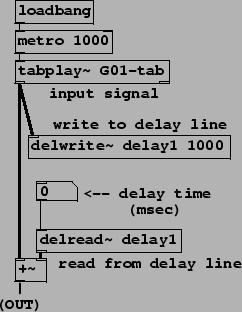
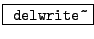
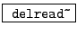

Example G01.delay.pd (Figure 7.23) applies a simple delay line to an input signal. Two new objects are needed:
|  |
:
define and write to a delay line. The first creation argument gives the name of the
delay line (and two delay lines may not share the same name). The
second creation argument is the length of the delay line in milliseconds. The
inlet takes an audio signal and writes it continuously into the delay line.
:
read from (or ``tap") a delay line. The first creation argument gives the name
of the delay line (which should agree with the name of the corresponding
delwrite~ object; this is how Pd knows which delwrite~ to
associate with the delread~ object). The
second (optional) creation argument gives the delay time in milliseconds. This
may not be negative and also may not exceed the length of the delay line as
specified to the delwrite~ object. Incoming numbers (messages) may be
used to change the delay time dynamically. However, this will make a discontinuous
change in the output, which should therefore be muted if the delay time changes.
The example simply pairs one delwrite~ and one delread~ object to make a simple, noninterpolating delay. The input signal is a looped recording. The delayed and the non-delayed signal are added to make a non-recirculating comb filter. At delay times below about 10 milliseconds, the filtering effect is most prominent, and above that, a discrete echo becomes audible. There is no muting protection on the delay output, so clicks are possible when the delay time changes.